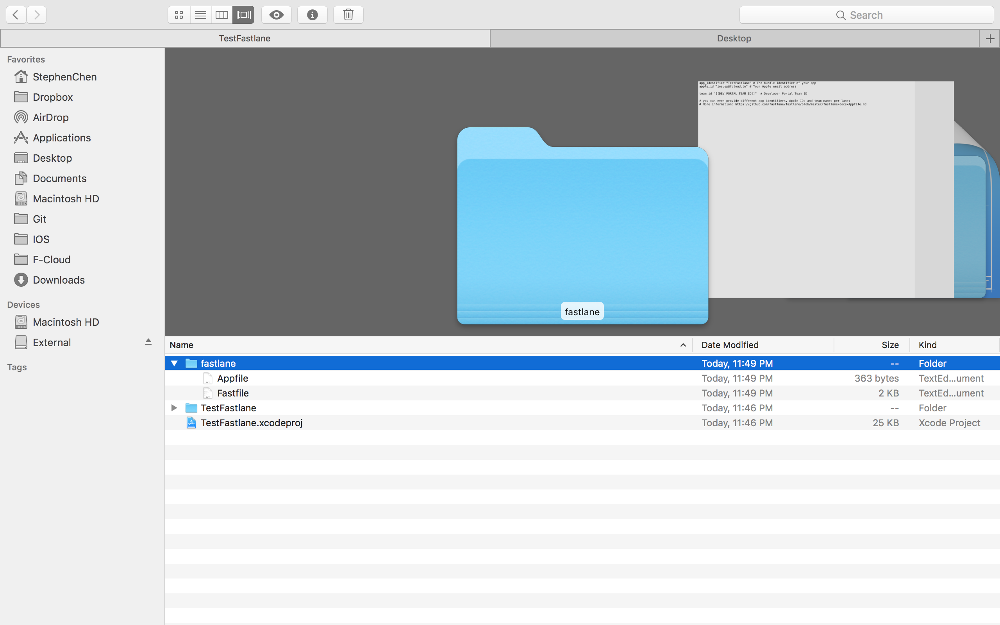

Integrate fastlane and script save your time .
Mar 22, 2017
今天想來介紹一個好用的工具，fastlane來達到自動化上架。以及如何用它來結合 slack 以及 透過 bash 去實作上架。
使用環境
|
|
自身面臨的情況
因工作所需，需要發布 企業內部使用，並打包成不同形式的 .ipa 上架擋案。換句話說，假設我要產生 10 個 擁有不同 Info.plist 的 .ipa 檔案，如果手動的話我不就要改到死了？每次 Archive 都要等很久，然後結束之後在改 Info.plist 上的參數然再上架。無限迴圈….
本篇分享概要
因為官方文擋其實非常詳細，所以這邊只分享大概流程。
解決自動上架
目前我知道打包除了手動之外，也只能透過
xcodebuild來實現，這次來試看看 fastlane 這工具來完成自動打包。
解決自動更新 Info.plist 的參數
這邊我打算使用 bash 來達到變更 Info.plist 內部參數，附帶一題，這邊情況適用我自己而已，其實任何檔案，圖片都可以。 It’s all depend on you.
結合兩者 fastlane + bash
步驟1：完成 fastlane 的設定
- 安裝 homebrew
|
|
- 透過 homebrew 來安裝 fastlane
|
|
- 然後到當前 iOS 的資料夾下
|
|
- 輸入帳號跟密碼之後，會出現一個 fastlane 的資料夾

TroubleShooting
Connection reset by peer - SSL_connect
- 因為我的 ruby 版本是 2.0.0，蘋果最近把服務器的TLS版本更新到 TLS 1.2，在我當前的 ruby 是不支持的

Reference
兩種版本的 rbenv
rm -rf ~/.rbenv
(brew uninstall –force ruby)[]
(rbenv)[https://github.com/rbenv/rbenv]
https://fabric.io/features/distribution?utm_campaign=github_readme